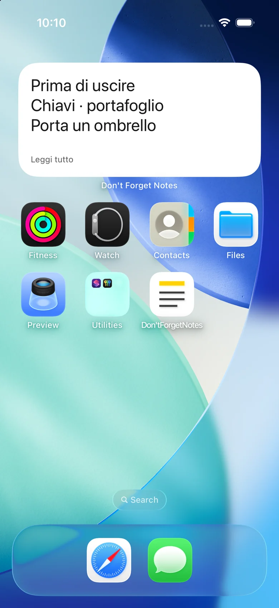
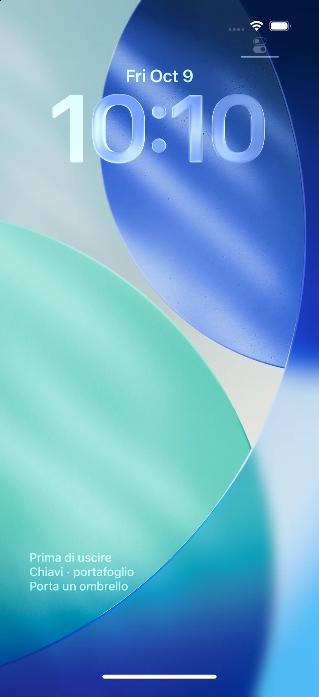

Le tue note in vista, sulla Home e sul blocco schermo.
Scrivi una nota veloce e tienila in vista con un grande widget Home o un widget della schermata di blocco di iPhone. I widget di blocco Android sono disponibili sui dispositivi compatibili.
Scopri come funzionaiPhone / Android · Prossimamente


Posizionalo una volta. Tienilo in vista.
Apri una nota e scrivi. Le modifiche si salvano automaticamente.
Scegli una nota e posiziona il widget una volta.
Modifica la stessa nota per aggiornare il widget, senza aggiungerlo di nuovo.
Facile da scrivere. Facile da leggere.
Tre dimensioni del testo
Normale, grande e molto grande. Tocca una nota lunga per leggerla tutta.
Note sulla Home e sul blocco schermo
Widget Home piccoli, medi e grandi su iPhone, più widget rettangolari, circolari e su una riga nella schermata di blocco. Android supporta i widget Home e quelli di blocco sui dispositivi compatibili.
Dieci lingue
Giapponese, inglese, coreano, cinese semplificato e tradizionale, spagnolo, francese, tedesco, italiano e portoghese brasiliano.
Informativa sulla privacy
Testo, date e preferenze di visualizzazione, eliminazione e lingua sono salvati sul dispositivo. Non inviamo note ai server o al SDK pubblicitario e non usiamo un SDK di analisi.
Informativa sulla privacyPubblicità
Gratis, con un banner sotto l’elenco delle note. Nessuna pubblicità nell’editor o nei widget. Le note funzionano anche se l’annuncio non si carica.